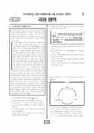

문제지

2024학년도 6월 모의평가 · 2023년 6월 시행
2024학년도 6모 국어 언어와매체 1등급컷은 원점수 93점(추정), 표준점수 최고점은 136점입니다.
원점수 1등급컷은 공식 발표값이 아니라 EBSi·입시기관 값입니다. 등급별 값은 등급컷 표, 출처 구분은 데이터 원칙에 있습니다.

시험지를 먼저 풀어 보세요. 등급컷·표준점수·난이도는 흐리게 가려 뒀어요.
| 등급 | 원점수 | 표준점수 | 백분위 | 누적 |
|---|---|---|---|---|
| 1 | 93 | 130 | 96 | 4.08% |
| 2 | 86 | 124 | 89 | 11.78% |
| 3 | 78 | 117 | 77 | 23.61% |
| 4 | 68 | 108 | 60 | 40.74% |
| 5 | 56 | 97 | 40 | 60.89% |
| 6 | 42 | 85 | 23 | 77.34% |
| 7 | 26 | 70 | 11 | 89.75% |
| 8 | 15 | 62 | 4 | 96.18% |
등급별 컷 · 입시기관 3곳 원점수 추정 종합(이투스·종로학원·대성마이맥) · 공통+선택 점수 조합에 따라 다를 수 있음 · 만점 100점
정답 변경 없음
이의신청 4문항
시험 전체 관련 보도 4건은 2024학년도 6월 모의평가 회차 페이지에 모아 두었어요.
국어 영역 전체 응시자 기준입니다. 한국교육과정평가원이 교육부 보도자료로 공개한 표준점수 도수분포로 계산했습니다.
EBSi 응답자 기준으로 가장 많이 틀린 문항은 14번(2점)이고, 오답률은 63.6%입니다. 오답률 50%를 넘은 문항은 7개입니다.
| 순위 | 문항 | 배점 | 오답률 | 정답 | 많이 고른 오답 |
|---|---|---|---|---|---|
| 1 | 14번 | 2점 | 63.6% | ① | ④ 20.3% |
| 2 | 33번 | 3점 | 63.2% | ⑤ | ③ 28.2% |
| 3 | 9번 | 2점 | 59.8% | ① | ③ 28.2% |
| 4 | 24번 | 2점 | 58.9% | ① | ③ 19.3% |
| 5 | 37번 | 2점 | 54.3% | ② | ③ 25.1% |
| 6 | 18번 | 2점 | 53.5% | ① | ③ 27.3% |
| 7 | 30번 | 3점 | 51.7% | ② | ④ 19.4% |
| 8 | 36번 | 3점 | 45.3% | ⑤ | ④ 13.4% |
| 9 | 10번 | 3점 | 43.5% | ④ | ③ 22% |
| 10 | 35번 | 2점 | 43.4% | ③ | ② 20.5% |
| 11 | 16번 | 3점 | 42.7% | ③ | ④ 17% |
| 12 | 27번 | 2점 | 42.6% | ⑤ | ② 17.2% |
| 13 | 42번 | 3점 | 42.5% | ⑤ | ④ 15.6% |
| 14 | 34번 | 2점 | 40.1% | ③ | ④ 13.8% |
| 15 | 13번 | 2점 | 40% | ③ | ④ 14.6% |
EBSi 가채점 응답자 기준 · 전 문항 중 오답률 상위 15문항
출처: EBSi 역대 등급컷·오답률 공개 화면. 가채점에 참여한 EBSi 이용자 응답이라 전체 응시자 정답률과는 다를 수 있습니다.
발행 기관: 한국교육과정평가원(KICE). 파일 위치: 이 사이트가 보관한 사본. 저작권은 발행 기관에 있습니다. 원본과 다르거나 게시 중단이 필요하면 연락처로 알려 주세요. 등급컷 출처 구분은 데이터 원칙에서 설명합니다.
막대 색은 역대 대비 난이도 · 진한 막대가 이 시험 · 막대를 누르면 그 회차로 이동
공통과목 독서는 슈츠의 '때문에 동기'와 '위하여 동기'로 독서 동기를 설명한 독서론(1~3번), 재니스·레벤달·위티로 이어지는 공포 소구 연구를 다룬 사회 지문(4~7번), 활성화 에너지와 고체 촉매의 활성 성분·지지체·증진제를 다룬 기술 지문(8~11번), (가) 심리 철학의 동일론·기능주의와 로랜즈의 확장 인지 이론, (나) 지각을 주체와 대상이 분리되기 이전의 얽힘의 체험으로 보는 관점을 묶은 주제 통합형 인문 지문(12~17번)으로 구성되었습니다.
공통과목에서 오답률이 가장 높았던 14번(2점, 63.6%)은 (나) 필자의 관점에서 (가)의 확장 인지 관련 주장을 평가하는 문항으로, 주체와 대상이 지각 이전에 확정되어 있다는 전제를 (나)가 비판한다는 점을 잡아야 했습니다. 기술 지문의 9번(2점, 59.8%)은 고체 촉매의 활성을 높이는 방법을 고르는 문항으로, 응답의 28.2%가 활성 성분의 소결과 관련된 오답을 골랐습니다.
문학은 작자 미상의 애정 소설 「상사동기」(18~21번), 권호문의 연시조 「한거십팔곡」과 김낙행의 한문 수필 「기취서행」을 묶은 갈래 복합(22~26번), 최명익의 현대소설 「무성격자」(27~30번), 조지훈 「맹세」와 오규원 「봄」을 묶은 현대시(31~34번)로 구성되었습니다.
33번(3점, 63.2%)은 부재하는 임을 기다리는 (가)와 봄과 같은 세계에서 대상들과 자유를 누리려는 (나)를 선생님의 설명에 따라 감상하는 문항으로 문학에서 가장 많이 틀렸습니다. 24번(2점, 58.9%)은 「한거십팔곡」의 각 수에서 화자의 태도가 어떻게 변하는지 <보기>를 바탕으로 판단하는 문항, 18번(2점, 53.5%)은 「상사동기」의 대화가 하는 서술상 역할을 묻는 문항, 30번(3점, 51.7%)은 「무성격자」의 정일이 자신의 내면까지 대상화한다는 <보기>로 작품을 감상하는 문항이었습니다.
언어와 매체에서 가장 많이 틀린 37번(2점, 54.3%)은 '현재 시제만 쓰일 것', '서술어의 자릿수가 둘일 것', '안긴문장이 부사어로 기능할 것' 가운데 두 조건이 실현된 예문을 고르는 문항이었습니다. 문법 지문은 중세 국어의 관형격 조사 '의/', 'ㅅ'의 쓰임을 다루었고, 36번(3점, 45.3%)은 '수픐', '世界ㅅ', '孔子의' 같은 자료를 결합 원칙과 예외적 결합으로 탐구하는 문항이었습니다.
매체는 등대 스탬프 여행을 소개하는 보이는 라디오 방송과 이를 들은 학생의 메모를 다루었습니다. 37번처럼 여러 문법 조건을 동시에 따지는 문항은 조건 하나를 만족하지 않는 선택지부터 지워 나가는 방식이 효율적이고, 중세 국어 관형격 조사는 유정 명사·무정 명사, 높임 여부에 따른 결합 원칙을 표로 정리해 두는 것이 좋습니다.
국어는 만점자가 많았던 만큼 한두 문항의 실수가 등급을 가른 시험입니다. 14번처럼 두 글의 관점을 엮는 문항은 (나)가 무엇을 전제로 삼아 비판하는지를 한 문장으로 정리하고 선택지와 대조하는 연습이, 24번처럼 연시조의 여러 수를 오가는 문항은 각 수의 화자 태도를 짧게 적어 두고 비교하는 연습이 도움이 됩니다. 시험 전체 흐름은 이 회차의 회차 해설에 정리했습니다.